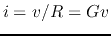
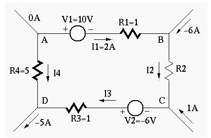

- Given the basic relationship between the voltage across and
current through each of the three types of components
 ,
,  ,
and
,
and  ,
,
| Resistor |
 |
|
| Inductor |
|
|
| Capacitor |
 |
|
- derive the expression for the equivalent resistance
of
 resistors
combined in series. Then derive
the expression for the equivalent resistance of the
resistors combined in parallel.
resistors
combined in series. Then derive
the expression for the equivalent resistance of the
resistors combined in parallel.
- Repeat the above for capacitors
 .
.
- Repeat the above for capacitors
.
- (a) If two light bulbs both labeled as 110V and 40W in series are
connected to a socket outlet of 190V, what is the power consumption of
each of the bulbs?
(b) Replace one of the two bulbs by another bulb labeled as 110V 15W, and
find the power consumption of each of the bulbs. What will happen to each
of the two bulbs? (Note that when the power consumption by a bulb is larger
than the specified wattage, it will be burned out!)
- Consider the circuit on the left. Give the expressions of voltage
 and
and  across
across  and
and  , respectively, in terms of
and as well as the voltage source
, respectively, in terms of
and as well as the voltage source  .
.
In the circuit on the right, give the expressions of the voltages across
and  in terms of the circuit parameters ( through
as well as the voltage source ).
in terms of the circuit parameters ( through
as well as the voltage source ).
- Measurement of a physical process by instruments may be tricky due
to the inevitable interfere on the process being caused by the instruments
(remember what you learned in quantum mechanics?). The figure below shows
two possible configurations for the measurement of the voltage across and
the current through the load.

- What are required of the ammeter and the voltmeter to minimize their
influences on the measurements?
- How would the ammeter and the voltmeter affect the measurement of the
current and the voltage in either of the configurations (a and b)?
- Use Kirchhoff's voltage and current laws to find voltage
 and
resistance in the circuit shown below:
and
resistance in the circuit shown below:

(Note: The direction of a current and the polarity of a voltage source can
be assumed arbitrarily. To determined the actual direction and polarity, the
sign of the values also should be considered. For example, a current labeled
in left-to-right direction with a negative value is actually flowing
right-to-left.)
- Find the equivalent resistance between
the two terminals before and after the switch is closed. (Note, the two
diagonal branches are NOT connected to each other in the middle.)

- (Optional, extra credits) Find the equivalent resistance
between the two terminals in the figure, where
 ,
,  ,
,
 ,
,  ,
,  . What is if
. What is if  ?
?
(Hint: apply a test voltage  across the terminals and the
equivalent resistance can be found to be
across the terminals and the
equivalent resistance can be found to be
 .
The circuit can be solved by applying KCL to and .)
.
The circuit can be solved by applying KCL to and .)

- Design a multimeter that can measure both DC and AC voltage, DC current,
and resistance with different scales. Specifically, you are given an analog
meter
 with a needle display, which reaches full scale when a DC current
of
with a needle display, which reaches full scale when a DC current
of
 goes through it. The internal resistance of the
meter is 10 Ohms. In addition, you need some multi-position rotary switches
to select different scales for each of the three types of measurements, and
resistors with any values needed in your design.
goes through it. The internal resistance of the
meter is 10 Ohms. In addition, you need some multi-position rotary switches
to select different scales for each of the three types of measurements, and
resistors with any values needed in your design.